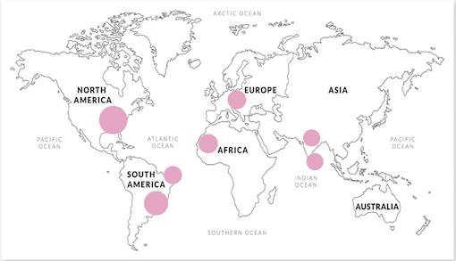

Rozenkwarts
De werkingen van een rozenkwarts zijn:
kalmerend
helpt bij trauma en angst
opent hart voor liefde
De rozenkwarts behoort tot de kwartssoort onder de edelstenen en is een lichtroze steen waar je doorheen kan kijken
Rozenkwarts is bekend als de steen van het hart en de liefde, precies zoals de kleur van deze edelsteen weergeeft.
Dan moet je niet alleen aan romantische liefde denken, maar ook de liefde voor familie vrienden, spirituele liefde en liefde voor jezelf. De steen werkt sterk in op het hart chakra en opent het hart om liefde te ontvangen en om liefde te geven
Herkomst
De belangrijkste vindplaatsen van een rozenkwarts zijn: Brazilië, Namibië, India, Sri Lanka en Zambia maar de edelsteen is ook te vinden in Duitsland en de Verenigde Staten.
Kristallen Vorming
Rozenkwarts ontstaat onder de grond door de hoge temperatuur van het magma als het afkoelt dan ontstaan er kristal brokken, de brokken krijgen een roze kleur vanwege Titanium dat in de kristallen aanwezig is.
Astrologie
De geboortesteen van oktober is de rozenkwarts, hierbij horen de sterrenbeelden vissen en weegschaal. bron